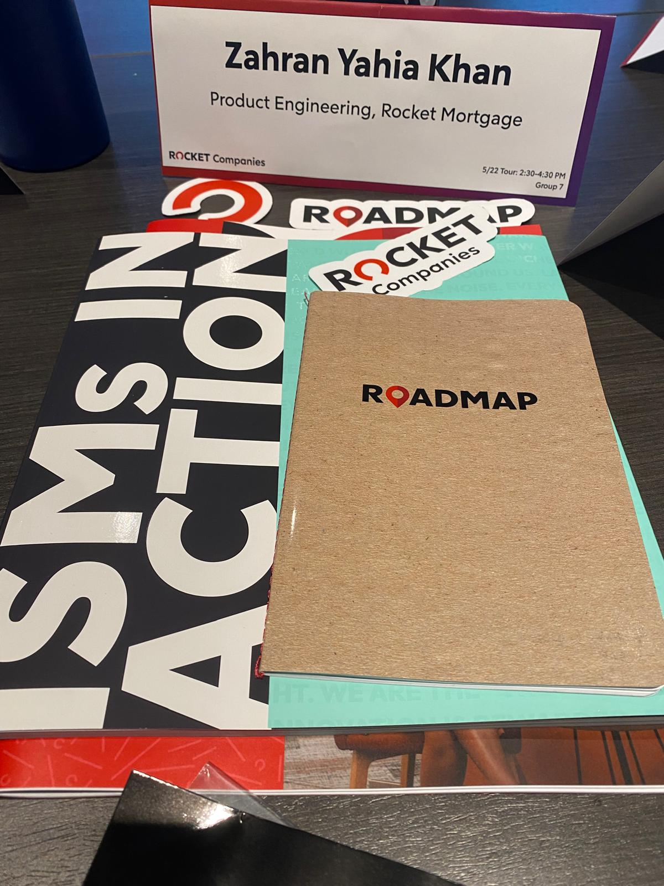

- 2025
Software Engineer Intern
This summer, I interned with the Rocket Pro team at Rocket, contributing to new broker-facing product features while also diving deep into cloud and infrastructure. I worked with Kubernetes, Terraform, and CI/CD pipelines to streamline core services, and implemented multi-agent AI workflows to improve mortgage processing. The combination of feature development, systems-level engineering, and networking gave me a broader perspective on building scalable, reliable tools.
Engineering Reflection (July 2025):
SWE has never evolved this quickly—it's a different game now. Compared to my internship last year, I've seen just how far AI has advanced, with Model Context Protocol (MCP) and agentic AI emerging as industry-wide trends. At Rocket's quarterly hackathon, we prototyped several enterprise-level use cases around these technologies and even implemented multiple working solutions. This reinforced my belief that AI is no longer just an experimental prototype, but a serious engineering tool that every developer should leverage to boost productivity—so that we can spend more time tackling the harder aspects of the job.
At the same time, I also encountered its boundaries in hands-on software engineering. For tasks with clear references—such as scaffolding a new microservice based on existing patterns, generating CRUD layers, or spinning up utility scripts—GPT was incredible, often saving hours of effort. However, when the problem space was less defined, the models degraded code quality, overlooked architectural considerations, or confidently produced incorrect implementations—PRs that no reasonable engineer would ever approve. It was like being taken from point A to point B without acknowledging the road in between—sometimes crashing along the way.
This summer highlighted the distinction between what AI can accelerate and what requires further engineering judgment. Building an API is no longer a differentiating skill when GPT can generate one in a few prompts. The core engineering value lies in areas where experience and foresight matter: ensuring observability, tracing, and monitoring so that debugging is possible when systems fail, or making long-term architectural choices for database operations and performance optimizations. I came to appreciate this by observing senior engineers and architects. I also realized how essential it is to deeply understand a framework's design patterns—without that foundation, even the best prompts couldn't steer Copilot toward optimal solutions. That's exactly how transformer models are expected to work: way powerful within context.
My biggest takeaway is that becoming an entry-level engineer in the age of AI can go two ways. Either I use AI as a tool to sharpen my reasoning and scale as an impeccable engineer, or I risk becoming a mere AI wizard who skips over the fundamentals—something I never want to be.
Overall, this internship showed me that AI is a powerful amplifier but not a replacement for engineering fundamentals. It excels at accelerating implementation but still struggles with design, resilience, and long-term maintainability. My growth this summer was learning when to lean on AI for speed—and when to slow down and apply architectural discipline myself.
Looking ahead, my goal is to continuously adapt to newer technologies while never compromising the basics. I want to see how much more productive I can become by leveraging AI tools thoughtfully, while steadily developing the intuition that defines good engineers.
TL;DR:
If I could summarize it in one line, I wouldn't have written the whole damn thing.
- 2024

Software Engineer Intern
As a Software Engineer Intern at Rocket Mortgage, I contributed to the Third Party Origination team as a full-stack developer. I collaborated on implementing new features to automate specific loan application processes, working on both the front-end and back-end to streamline user interactions and data processing.
Engineering Reflection:
As generative AI advances, it can increasingly handle tasks like building simple end-to-end applications, generating unit tests, and automating repetitive tasks. However, real engineering involves understanding the underlying concepts and the codebase, especially when debugging complex systems. Other key challenges include ensuring the application is scalable, available across all regions, and resilient—getting the cloud engineering right.
Undergraduate Teaching Assistant (UGTA)
As an Undergraduate Teaching Assistant for the Computer Organization course, I assisted students with their coursework and helped develop instructional materials.
- 2023

Campus Tour Guide
The Green & Gold Guides are the official tour guides for prospective students and their families on USF Tampa's campus.
As a USF Green & Gold Tour Guide, I conduct over 150 campus tours per semester, showcasing USF's facilities and academic programs to prospective students and their families.
My role as a tour guide has provided me with valuable personal and professional benefits. I improved my communication skills by talking to different groups, answering questions, and giving accurate information. It also boosted my confidence in public speaking, especially when talking to large audiences.
USF College of Engineering Dean's List
• Recognition for academic excellence, achieving a position on the Dean's List for outstanding performance during the semesters Spring 2023 and Fall 2023.- 2022

USF Green and Gold Presidential Waiver Award
• Recognized for outstanding academic achievement and commitment to scholarly pursuits.
This award significantly contributed to covering my attendance costs, providing me with the flexibility for substantial personal and academic growth here at USF.